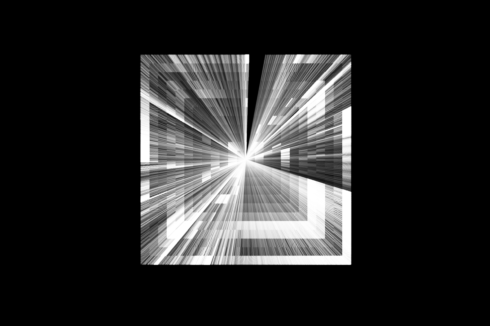
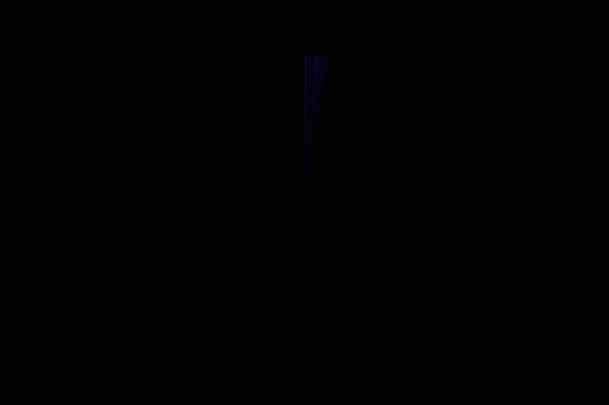
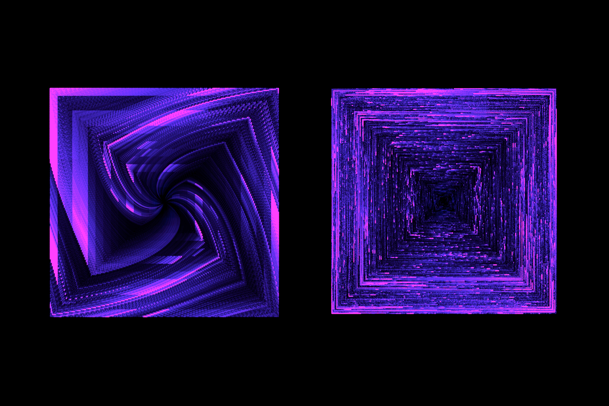
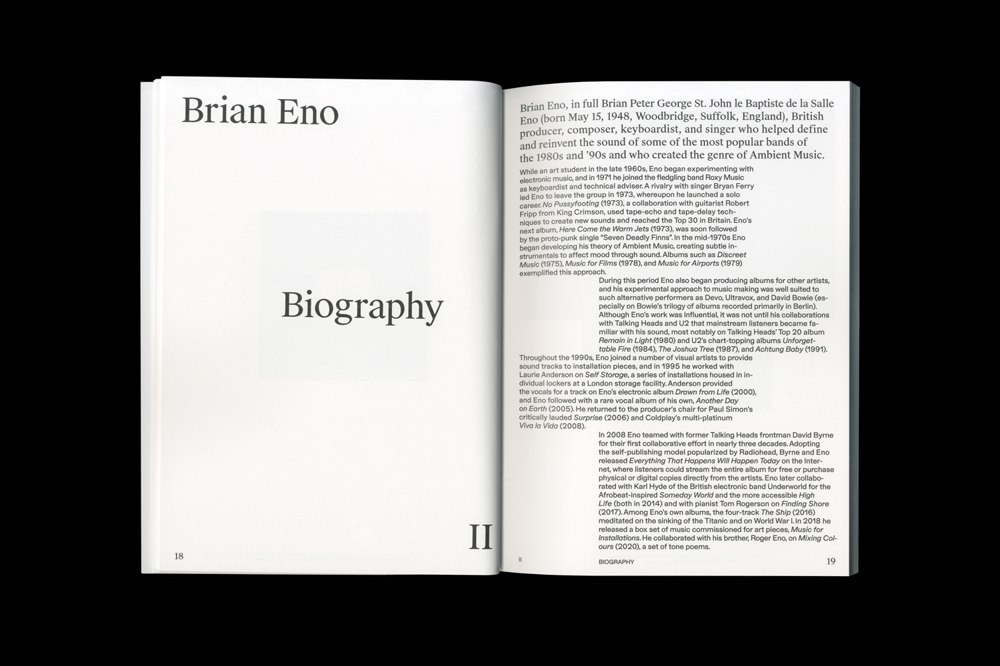
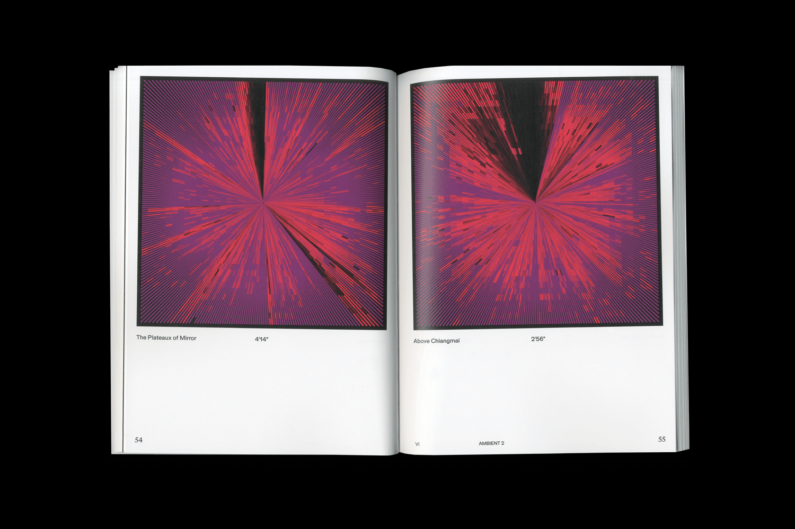
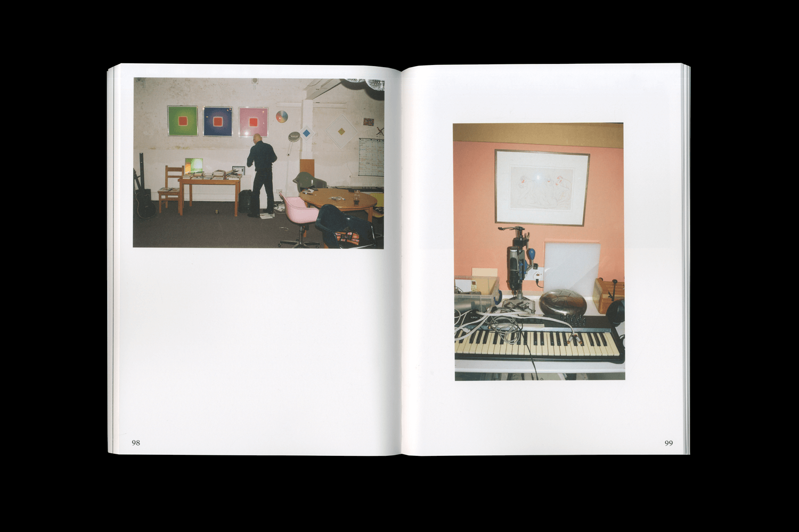

Brian Eno audio visualizer
Generative design tool, 2021
Brian Eno is a musician and visual artist known for his ambient music and also for his visual, light–based installations. This piece of software I developed, helped a group of students to complete an assignment that took in consideration the work of Eno and an hypothetical exhibition of him. The simple interface allows to analyze a song made by the artist, and use the data of the sound frequencies to draw dots affected by the intensity of them. The dots are then displaced radially according to the length of the track and presented in a square, a recurring form in Brian Eno's work. The generated squares were then exported and used by the students, in order to create a book for the artist's exhibition. Credits to Alberto Buratto, Nadine Curanz and Enrico Solfrini, for the work displayed in the last three pictures.
creative coding, processing, generative design
Generative design tool, 2021
Brian Eno is a musician and visual artist known for his ambient music and also for his visual, light–based installations. This piece of software I developed, helped a group of students to complete an assignment that took in consideration the work of Eno and an hypothetical exhibition of him. The simple interface allows to analyze a song made by the artist, and use the data of the sound frequencies to draw dots affected by the intensity of them. The dots are then displaced radially according to the length of the track and presented in a square, a recurring form in Brian Eno's work. The generated squares were then exported and used by the students, in order to create a book for the artist's exhibition. Credits to Alberto Buratto, Nadine Curanz and Enrico Solfrini, for the work displayed in the last three pictures.
creative coding, processing, generative design






